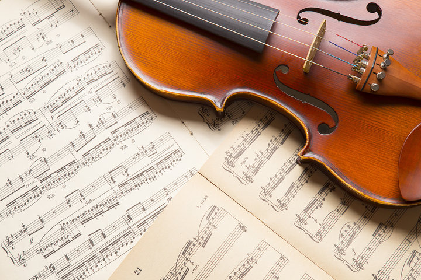
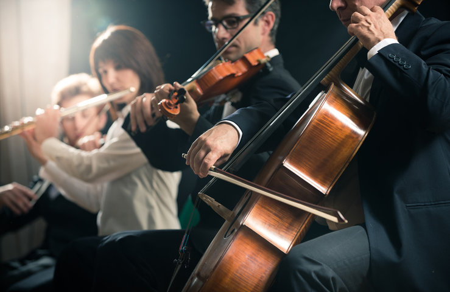
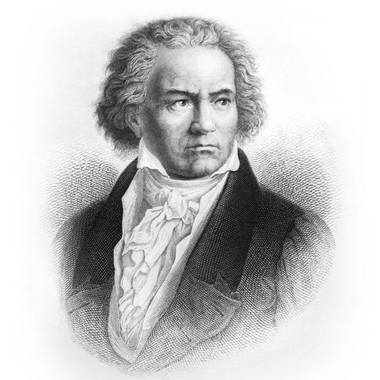

About Classical Music
Classical music is a genre of Western art music that originated in Europe during the medieval and renaissance periods, and evolved into its modern form during the Baroque, Classical, and Romantic eras. The term “classical” can be confusing because it is often used to refer to all orchestral music, but it actually refers specifically to the music of the Classical period (approximately 1750-1820), which was characterized by clarity, balance, and simplicity.
Classical music is known for its complexity, structure, and use of orchestral ensembles. It typically consists of instrumental compositions, often featuring a solo instrument or vocalist accompanied by an orchestra. The music is often composed in multiple movements, with each movement having its own distinct tempo, melody, and mood. Classical music also utilizes a wide range of instruments, including strings, woodwinds, brass, and percussion.
Classical music has had a profound impact on our society and culture. It has inspired and moved listeners around the world, with many famous works becoming cultural touchstones. For example, Beethoven’s Ninth Symphony has been used in political speeches, films, and even as the anthem of the European Union. Mozart’s operas are still performed in opera houses around the world. Bach’s works have been studied and admired for centuries, and are still performed by orchestras and choirs today.
Source: hidraupianobenches.com
Origins
Classical music is understood as any composition that emerged during classicism, which includes the years 1750 to 1820. This musical style was born as a form of rupture against the strict rules of baroque music characterized by their horizontal structure where several melodies overlapped at the same time.
The 18th and 19th centuries were the formative period of classical music and saw the birth of the opera and the oratorio, the sonata, the concert, and the symphony. Italians were the first to develop these genres, but the Germans, Austrians, and English soon followed. Classical music emerged by taking elements from other Western musical traditions, both liturgical and secular, such as the music of Ancient Greece or Ancient Rome, and underwent a synthesis with the musical traditions of the new territories.
We can currently say that the genre has contributed to the formation of many modern styles, such as rock and pop, in which sounds typical of classical instrumentation are even combined to create new songs.
Source: kaunus.com
Styles
Medieval and Renaissance Era
Chants dominated the Medieval era when Catholic monks began to standardize sacred music throughout the church. Instruments from this period include early versions of the flute and the violin. Instrumentation further developed in the Renaissance era with the first bass, brass, and percussion instruments, and portable pipe organs. Forms of music began to take shape as social dancing grew in popularity as well. It became necessary for a standard form of musical notation to improve the accuracy of public performances. The invention of printed music and a variety of instruments facilitated rapid growth in classical music and the Renaissance period turned out several notable composers.
Baroque Era
As classical music continued to evolve, the Baroque era saw the development of a continuous bass line in most compositions, allowing for more complex musical structures. The sonata began to take shape, and formal variations and themes developed. The keyboard became popular, and new instruments like the cello, oboe, and bassoon emerged. While the types of instruments in an ensemble were not yet standardized, the range of musical instruments used widened considerably.
Classical Era
The Classical era hosted composers like Joseph Haydn, Ludwig van Beethoven, and Wolfgang Amadeus Mozart. Standardization of style, presentation, and composition was firmly established during this era. The piano became the predominant keyboard instrument, and the basics for which instruments were required to construct an orchestra began to form. Opera continued its development throughout this period as well, while the symphony became its own musical form.
Romantic Era
The Romantic era saw more development of the melodic line, demonstrating more expressive emotions through classical music in line with the art movement. Free-form pieces came out of this era, like preludes, fantasias, and nocturnes. Classical music continued to gain so much popularity that musical institutions could now be distinguished from the nobility and became their own independent entities. This transformation encouraged the creation of organizations to teach, preserve, and perform music. The Classical era also saw the modernization of the piano as we know it today, and demand for the instrument grew phenomenally. A great number of piano builders were established during this time.
Modernist Era
The Modernist era saw a rejection of the common practice period standards like traditional melodies, structure, instrumentation, and tonality. The classical genre became more about the aesthetic and philosophical stance on the music, as well as the development of musical language.
Source: musicgenreslist.com
Key Artists
Johann Sebastian Bach
He was a German composer, stood out for his extraordinary command of the violin. A good part of his compositions saw the light in the Baroque period. It was characterized by using a precise musical technique. Among his most recognized compositions are the Brandenburg Concertos, the Passion according to St. Matthew, and the Sonatas and Partitas for solo violin.
Wolfgang Amadeus Mozart
Who does not know Mozart? This prodigy of Austrian origin mastered the piano and was skilled with other instruments such as the violin. His talent and skill began at an early age; he was already composing at the age of five. Some of his best works are The Magic Flute, The Marriage of Figaro, and his well-known Requiem, which he wrote during his final days.
Ludwig van Beethoven
He is one of the best-known classical musicians. He was born in Bonn, a city in Germany, in the year 1770. Despite succeeding as a composer, he did not lead an easy life, especially when his hearing was affected and he began to lose the ability to listen. Hence his great ability and musical achievement. The 32 piano sonatas and the Ninth Symphony are two of his most famous works.
Frédéric Chopin
He´s from Poland; Chopin is considered one of the best musicians of Romanticism. His Concert for Piano and Orchestra No. 2 Op. 21 in F minor is probably the most outstanding composition he has ever made. The technique that can be appreciated within his works has earned him to be compared with artists of the stature of Beethoven or Bach.
Source: kaunus.com